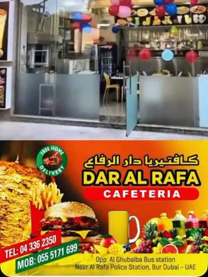
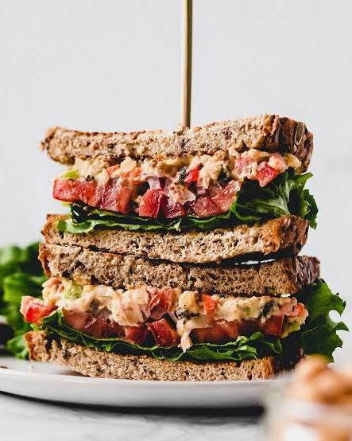

01
01




A neighborhood stop since day one
Good food for wherever the day takes you.
Right in the heart of Meena Bazaar, Dar Al Rafa is here for early starts, late finishes and everything in between. Enjoy a quick dine-in, grab takeaway, sit outside, or ask about no-contact delivery.
Easy on the walletAverage bill around AED 15
Open lateEvery day, 6 AM – 2 AM
Quick dine-in13 seats, plus outdoor seating
Pay your wayCash, cards & NFC mobile pay